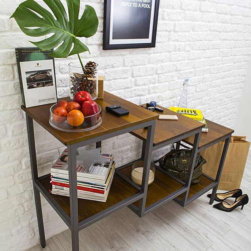

Скандинавский стиль сегодня в тренде. Он подойдет всем, кто ценит теплую атмосферу и домашний уют, кто не хочет радикальных изменений, но при этом мечтает об обновлении интерьера. И хотя Скандинавия ассоциируется с холодом, интерьеры в таком стиле теплы и уютны даже в самые мрачные осенние и зимние дни. Если вы желаете жить в просторных и светлых комнатах, в атмосфере спокойствия и безмятежности – сделайте выбор в пользу скандинавского стиля, и вы точно останетесь довольными. Всего лишь несколько простых шагов позволят преобразовать жилье в подобие шведских апартаментов - достаточно немного "освежить" дизайн интерьера и приобрести соответствующую мебель.
Скандинавский стиль — только натуральное
Скандинавский стиль сочетает в себе простоту, универсальность и экологичность. Северяне чтят природу, любят и берегут ее дары. Потому здесь предпочтительны натуральные материалы - дерево, кожа, ткани из натуральных волокон. Мебель в скандинавском стиле – без всяких излишеств, четкой геометрической формы, простые и лаконичные. Углы бывают слегка закругленными, что соответствует модным органическим тенденциям. Обивка удобных диванов, кресел и стульев, как правило, светлых тонов, сделана из хлопка, льна и овечьей шерсти. Каркас и ножки - преимущественно деревянные, могут быть покрыты лаком или окрашены масляной белой краской. Как дополнение - элементы из металла и стекла, вносящие в общую картину немного шарма и блеска.
Основа стиля – свет и свободное пространство
Именно светлые, приглушенные тона и некий минимализм присущи мебели в скандинавском стиле. И именно это надо сохранить и приумножить. Для этого воспользуйтесь следующими рекомендациями:
- мебели должно быть мало;
- наилучший вариант – мебель, которая помогает значительно сэкономить свободное пространство и при этом остается функциональной, то есть модульная или складная;
- множество полочек, ящичков и ниш, куда удобно складывать вещи - просто идеальный вариант.
А как же декор?
Что касается декора, то в данном случае лучше обойтись без него или, если уж использовать, то - минимум. Фактура натуральной древесины в сочетании со стеклом и металлом создает интересные световые эффекты. Исключение – это резная мебель, с витым, изогнутым профилем.
Скандинавский стиль - акценты
Если бы скандинавский интерьер был полностью белым или в пастельных тонах - он выглядел бы уныло и безлико. Его изюминкой являются контрастные детали и яркие акценты. Это могут быть приметные пуговички на спинках мебели, броские подушки, обивка кресел, отличающаяся по цвету от диванной, коврики, абажуры - все что угодно. Главное - умеренность, просто несколько интересных деталей.
Декоративные подушки могут быть попросту разбросаны вокруг низкого журнального столика. Аксессуары в скандинавском стиле, хоть они и минималистские, придадут интерьеру интригующий вид. Кроме того, дизайн помещения в скандинавском стиле могут дополнить плетеные корзины или деревянное кресло-качалка.
Резюмируя сказанное
Чем натуральнее и проще будет ваша мебель, тем лучше. И ее не должно быть много, только самое необходимое – диван, кресла или стулья, журнальный столик, комод или стеллаж и шкаф. Для скандинавского стиля характерна также складная мебель, которая сбережет ваш бюджет и свободное жилое пространство. При выборе всегда руководствуйтесь основными характеристиками данного направления: натуральные материалы, дерево, светлые тона, простые формы, многофункциональность. Оценивая каждый предмет мебели по этим критериям, вы без труда выберете все необходимое и создадите свой уютный дом.
Мебель в скандинавском стиле Алматы
Источник: analitic.ub.ua